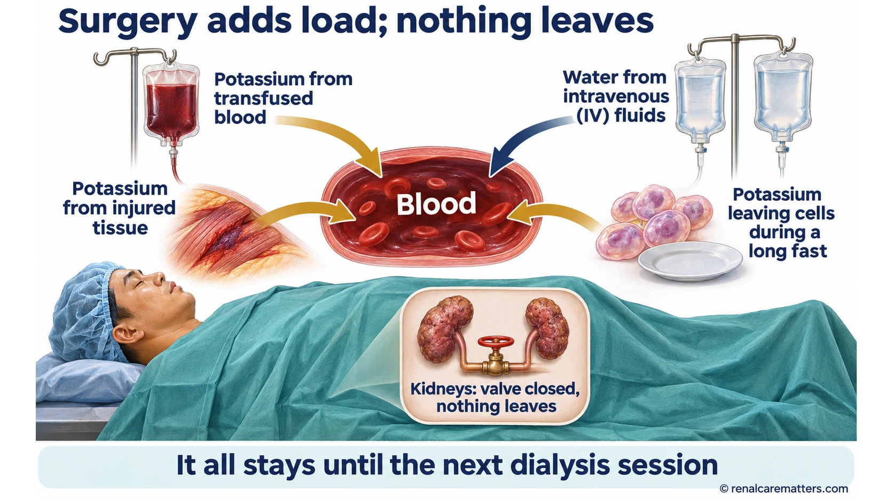
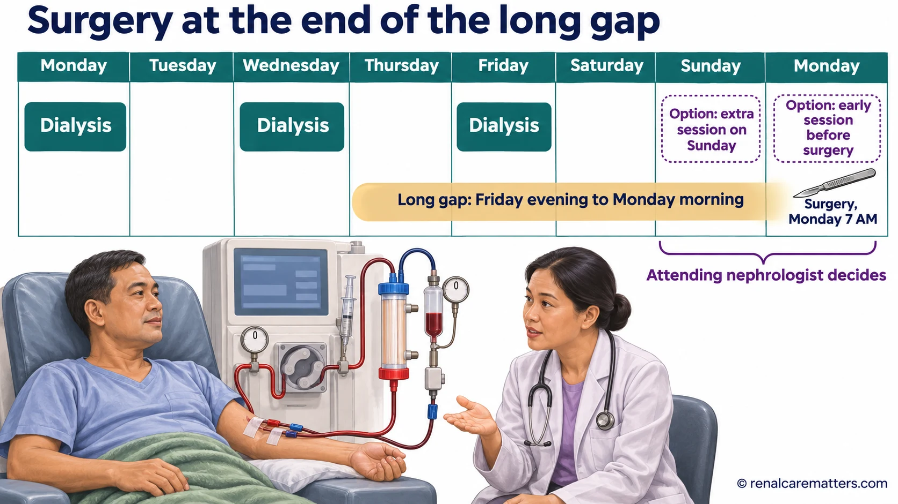
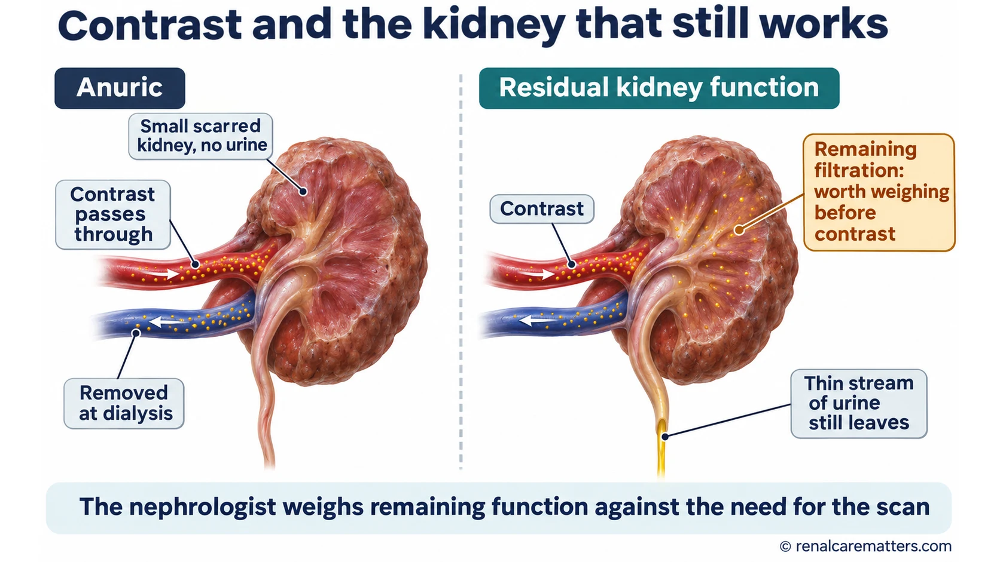
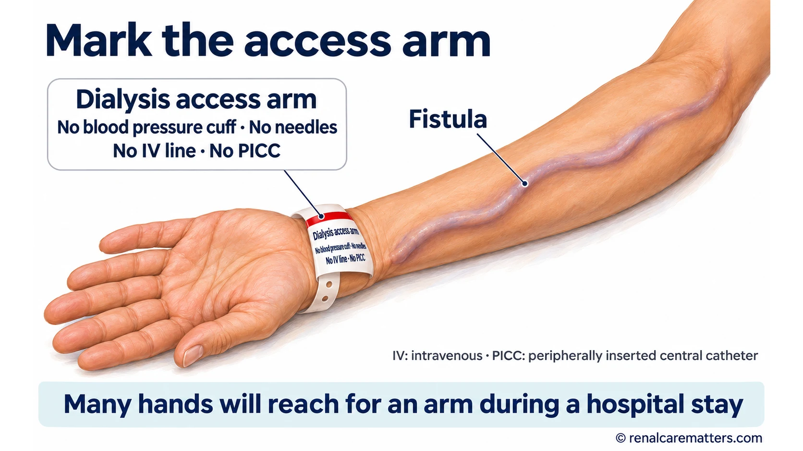
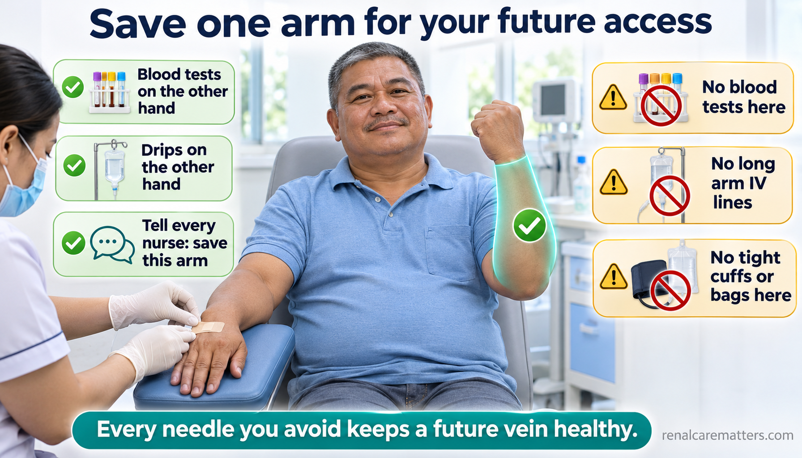
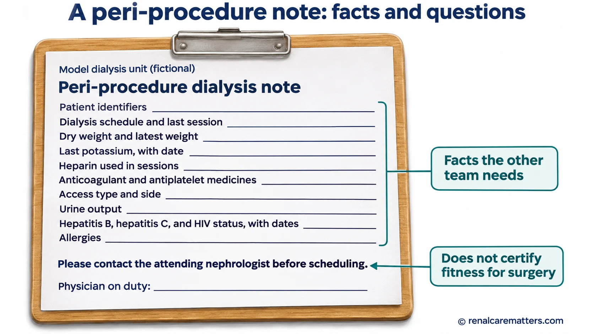
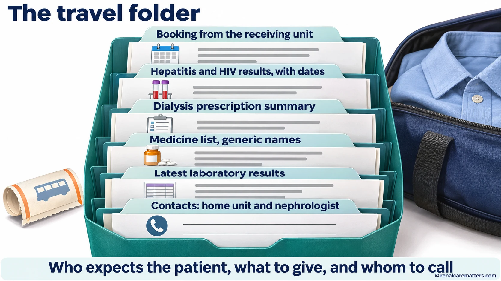

Outside the Unit: Surgery, Contrast, Hospital Stays, and Travel
Timing dialysis around procedures, advice on contrast, protecting the access in hospital, and preparing for travel.
PublishedNailathalaGipatikPepalwal:ReferencesMga SanggunianMga TinubdanReng Reperensya:14Audience: Physicians who cover hemodialysis shifts · attending nephrologists, medical directors, and head nurses who orient themRead timeOras ng pagbasaOras sa pagbasaOras ning pamamasa:
This module is study material for physicians on duty in hemodialysis units. It explains the reasoning behind common decisions; it is not a protocol. At the chairside, follow your unit’s protocol and ask the attending nephrologist for guidance. Doses and cut-off values are set by your unit. Every case is fictional.
Learning objectives
After this module you should be able to
Explain why the timing of hemodialysis around surgery matters, and summarize the evidence on the dialysis-to-surgery interval and postoperative risk.
Advise a referring doctor on iodinated and gadolinium-based contrast in a dialysis patient, including the patient who still makes urine, using the American College of Radiology and National Kidney Foundation consensus statements.
Protect the vascular access and the arm veins during a hospital stay, and write a clear access-protection instruction.
Write a peri-procedure dialysis note that states the facts and the questions for the attending nephrologist, without certifying fitness for surgery on the nephrologist’s behalf.
Prepare a patient for travel with the right documents, test results, and prescription summary, and explain the infection risk of dialysis in another unit.
Plan the first session after a hospital discharge, and recognize the patient at high risk of readmission.
Pre-testBefore you read, answer the 8 self-assessment questions and note your score. After the module, select New set of questions and compare. The difference is what you learned; the questions you still miss are what to reread.
Start here
The big picture, in plain words
In plain wordsPicture a house whose only drain is blocked. Water, ash, and kitchen waste pile up until the garbage truck comes on its fixed days. Now a contractor arrives, a crowd comes to dinner, and the truck is told to skip a visit. Nobody in the crowd knows the drain is blocked.
The picture has a limit. A patient on dialysis is not a passive house. Potassium shifts in and out of cells, and some patients still make a little urine. But the core point holds. A dialysis patient has no steady exit for potassium, water, and acid, and the doctors who plan surgery, scans, and admissions often do not see dialysis patients every day.
Figure 1 · Key terms for this module
Peri-procedure periodThe time immediately before, during, and after an operation or invasive test.
Dialysis-to-surgery intervalThe time between the end of the last dialysis session and the start of a procedure.
Residual kidney functionThe filtration that the patient’s own kidneys still perform. It is usually seen as some daily urine output.
Iodinated contrastThe contrast medium used for computed tomography (CT) and angiography.
Gadolinium-based contrastThe contrast medium used for magnetic resonance imaging (MRI).
Peripherally inserted central catheter (PICC)A long catheter placed through an arm vein with its tip in a large central vein.
Vein preservationProtecting the arm veins from needles, cuffs, and catheters so they remain usable for a fistula or graft.
ReadmissionA return to hospital within a short time after discharge, often counted at 30 days.
Most dialysis patients pass through surgery, scans, and hospital stays without harm when the unit and the other teams share facts early. A few are harmed by gaps: a skipped session before an operation, an emergency session ordered for no reason, a catheter in the arm that was saved for a fistula, a trip with no chair booked at the other end. Your work is to supply the facts, protect the access, and bring the attending nephrologist into every decision that changes the prescription.
Opening case · fictional
Case: Surgery tomorrow, dialysis today
It is Friday, two in the afternoon. Mr. Ernesto Villanueva, 66, dialyzes on Mondays, Wednesdays, and Fridays through a left forearm fistula. He is in the chair, and the session is running under the standing order. The nurse, Ms. Grace Santos, hands you a note from the orthopedic resident.
Mr. Villanueva fell at home on Wednesday night and has a right hip fracture. Surgery is booked for Monday at 7 AM. The note reads: “Please clear for surgery. He also needs a CT angiogram of the leg tonight. Can he have contrast? Should we put a PICC in the left arm for antibiotics?”
Today he arrived 2.8 kilograms above his dry weight. His blood pressure is 150/88 mm Hg. His potassium this morning was 5.8 mmol/L and his hemoglobin 9.4 g/dL. He takes clopidogrel. He still passes about 300 mL of urine a day. These are illustrative values for this case, not targets.
Before reading on, decide:
What is the problem with a Monday 7 AM operation after a Friday session, and what will you ask the attending nephrologist to decide?
What do you tell the resident about contrast tonight, given his urine output?
What do you write about the PICC and the “clearance,” and what goes in your note?
Keep your answers in mind. The lesson gives you what you need, and the case review near the end shows one sound response.
Lesson · part 1
Why the dialysis patient is different on the operating table
Working kidneys are the safety valve of the peri-procedure period. They excrete the potassium released by injured tissue, the acid made by poorly perfused muscle, and the water given in intravenous (IV) fluids. In a dialysis patient the valve is closed. Whatever enters the blood stays until the next session.

Figure 2. Surgery adds potassium, acid, and water from several sources at once. With no kidney valve, all of it stays until the next dialysis session.
Module 2 explained how potassium, water, and acid accumulate between sessions. Surgery adds to each through a chain of causes.
What happens in surgery
What it does to the blood
What the other team may see
Tissue injury and crushed muscle
Cells break and release potassium and acid
A potassium rise after the operation that is larger than expected
Transfusion of stored blood
Stored red cells leak potassium into the bag as they age
A potassium rise after several units
A long fast
Insulin falls. Insulin normally drives potassium into cells, so more stays in the blood
A higher potassium on the morning of surgery
Acidosis from poor perfusion
Hydrogen ions enter cells and potassium leaves them
Potassium and acid rising together
Intravenous fluids
No urine to excrete them, so they stay in the circulation and tissues
Breathlessness and edema after the operation
Uremic bleeding (Module 4), heparin (Module 19), and drug dosing (Module 20) add to the risk and are not repeated here.
What the evidence shows about risk
Palamuthusingam and colleagues pooled 49 studies of elective surgery, with 41,822 patients on chronic dialysis and more than 10 million without kidney failure. Dialysis was associated with higher odds of death after surgery in every surgical field, with an odds ratio (OR) from 4.0 to 10.8.1
Figure 3 · Postoperative death: dialysis compared with normal kidney function
Orthopedic surgeryOR 10.8 (95% confidence interval 7.3 to 15.9), the highest excess in the review.
Vascular surgeryOR 4.0 (3.2 to 4.9), the lowest excess in the review.
After adjustmentThe excess was smaller after accounting for age and other illness, but remained.
What it does not showWhich steps would lower the risk. These are observational data.
Part of the excess reflects the heart disease, diabetes, and frailty that travel with kidney failure. Either way, these patients are fragile in surgery, and the plan should start early.
The Revised Cardiac Risk Index (RCRI) was derived in 4,315 patients aged 50 or older having elective major noncardiac surgery at one teaching hospital. It counts six predictors, and a serum creatinine above 2.0 mg/dL is one of them. Every dialysis patient therefore starts with at least one point.2
The 2024 American Heart Association and American College of Cardiology (American Heart Association (AHA)/ACC) multisociety guideline on perioperative cardiovascular management replaced the 2014 guideline.3 For patients with known cardiovascular disease being considered for noncardiac surgery, it states that a validated risk-prediction tool can be useful to estimate the risk of major cardiac events (Class of Recommendation 2a, Level of Evidence B-NR). The cardiac work-up belongs to the anesthesiologist and the cardiologist. Your part is to make sure they know what dialysis brings.
RememberA dialysis patient carries several times the postoperative risk of other patients. The safest operation is one planned around the dialysis schedule.
Lesson · part 2
Timing dialysis around surgery and procedures
Think of a calendar. The surgeon picks the day. The unit’s job is to have the patient arrive with the smallest possible load of potassium and fluid. On a thrice-weekly schedule, potassium and fluid peak at the end of the long weekend gap (Module 2). A Monday morning operation lands at that peak.

Figure 4. A Monday morning operation lands at the end of the long weekend gap. Moving or adding a session is the attending nephrologist’s decision.
The Medicare study
No trial has tested the best interval between dialysis and surgery. The largest study is a retrospective cohort by Fielding-Singh and colleagues. It covered 1,147,846 procedures in 346,828 United States Medicare patients on hemodialysis from 2011 to 2018. The outcome was death within 90 days.4
Last session before surgery
90-day mortality
Absolute difference compared with 1 day
Adjusted hazard ratio
1 day before
4.2%
Reference
Reference
2 days before
4.7%
0.6 percentage points
1.14
3 days before
5.2%
1.0 percentage point
1.25
Dialysis on the day of surgery was associated with lower 90-day mortality, 4.0% compared with 4.5% without same-day dialysis (adjusted hazard ratio 0.88). Same-day dialysis also weakened the association between a long interval and death.4
The authors called the absolute differences small and warned of residual confounding. A patient operated on three days after dialysis may have been sicker or operated on urgently. The study shows an association, not that moving a session saves lives.
Illustrative arithmetic from the published rates, not a target. Absolute risk difference = 5.2% − 4.2% = 1.0 percentage point = 0.010. Number needed to harm = 1 ÷ 0.010 = 100. In this association, about 100 procedures done 3 days after dialysis rather than 1 day go with one additional death within 90 days.4 What it tells you: the excess risk is real but modest. What it does not tell you: that an extra session would prevent that death.
Worked example: Mr. Villanueva’s weekend
Illustrative interval. Friday session ends at 6 preventive maintenance (PM). Surgery starts Monday at 7 AM. Friday 6 PM to Monday 6 PM = 72 hours. Monday 6 PM back to 7 AM = 11 hours earlier. Interval = 72 − 11 = 61 hours, about 3 calendar days. Published 90-day mortality: 5.2% at 3 days compared with 4.2% at 1 day, an association.4 Options to present to the attending nephrologist: a session on Sunday, an early session on Monday before surgery, or the usual schedule with a potassium check before surgery. What it tells you: he will reach surgery at the end of his longest gap. What it does not tell you: which option is right. That depends on his potassium, his fluid, the timing of the operation, and the unit’s capacity.
The site’s continuity planner and interdialytic weight gain calculator help you prepare the call. Neither decides the plan.
Figure 5 · Dialysis timing around a planned procedure
Know the dateConfirm the procedure, the date, the start time, and the requesting team.
Map the gapFind the last session before the procedure. Note whether the procedure falls after the long gap.
Gather the factsToday’s weight gain, the last potassium and its date, urine output, the access, and the anticoagulant and antiplatelet medicines.
Ask about heparinNote the heparin used in sessions. Module 19 covers heparin-free sessions and bleeding.
Call the attending nephrologistPresent the gap, the facts, and the options. The nephrologist decides on any extra, moved, or heparin-free session.
Write the planRecord the decision, who made it, and what the surgical team was told.
Stop and callStop and call the attending nephrologist when a surgeon or anesthesiologist asks for an extra or rescheduled session, a heparin-free session, or a potassium result before surgery, and when any procedure is planned on the access arm.
Lesson · part 3
Contrast for CT and MRI: what is safe and what to arrange
Contrast cannot injure filtration that no longer exists. A kidney that still makes urine, however little, has something left to protect. Module 3 explained why that leftover function matters.

Figure 6. Contrast cannot harm filtration that no longer exists. In a patient who still makes urine, the remaining function is worth protecting, and the attending nephrologist weighs it against the need for the scan.
Iodinated contrast for CT and angiography
The old fear with iodinated contrast was contrast-induced acute kidney injury. The American College of Radiology (ACR) and the National Kidney Foundation (NKF) reviewed this in 2020. Their consensus statement says the risk has been overstated, because older studies lacked control groups.5
The same statement advises IV normal saline prophylaxis for patients with acute kidney injury or an estimated glomerular filtration rate (eGFR) below 30 mL/min/1.73 m² who are not on maintenance dialysis. This is a consensus statement, not a graded recommendation. It does not apply to your patients on maintenance dialysis.5
What about the urine a dialysis patient still makes? Oloko and colleagues reviewed 9 studies with 434 dialysis patients and pooled the 7 with complete data. Residual function changed by a mean of −0.16 mL/min after contrast (95% confidence interval −0.66 to 0.34), which was not significant. The studies were small and varied widely, and few reported clinical outcomes.6 The evidence suggests no large loss but cannot exclude a small one.
Should the patient be dialyzed right after the scan? A narrative review in the “Things We Do for No Reason” series argues against emergency dialysis after contrast in patients on chronic hemodialysis. Its reasons: modern low-osmolar agents cause small fluid shifts, an extra session does not protect residual function, and delaying a needed scan can harm the patient.7 This is expert argument, not a trial.
Worked walk-through, illustrative. Mr. Villanueva, CT angiogram of the leg tonight. Step 1. Agent: iodinated contrast. Step 2. He is on maintenance dialysis, so the saline prophylaxis advice for patients not on dialysis does not apply.5 Step 3. He passes about 300 mL of urine a day. Tell the attending nephrologist, who weighs the need for the scan against a possible small effect on residual function. Pooled data show no significant loss.6 Step 4. No emergency session is needed solely for the contrast.7 Step 5. Mention heart failure or a large contrast volume in the call. What it tells you: the scan should not wait for dialysis. What it does not tell you: whether this patient’s urine output will change.
A warning: the site’s contrast kidney injury risk score was built for patients not on dialysis. Do not use it for a patient on maintenance dialysis.
Gadolinium-based contrast for MRI
The fear with gadolinium was nephrogenic systemic fibrosis (NSF), a thickening of the skin and organs seen with older agents in patients with advanced kidney failure. The 2021 ACR and NKF consensus statement reports zero NSF cases after 4,931 doses of group II agents in patients with eGFR below 30. The upper bound of the 95% confidence interval was 0.2% for patients on dialysis. The statement says that starting or changing dialysis is likely unnecessary after a group II or group III agent.8 This is a consensus statement, not a graded recommendation.
Figure 7 · Contrast decision card
Which agentIodinated for CT and angiography. Gadolinium-based for MRI. Ask the radiology team which group of gadolinium agent they use. The reassurance covers group II and group III agents only. For any other agent, tell the attending nephrologist.
Anuric patientNo residual function to lose. Keep the usual schedule unless the nephrologist decides otherwise.
Patient who still makes urineTell the attending nephrologist before the scan if you can. The nephrologist weighs the benefit of the scan against the residual function.
What to askDaily urine volume, the agent and its group, the expected volume, heart failure, and when the next session is due.
Who decidesThe requesting doctor decides the scan. The attending nephrologist decides any change to dialysis.
RememberDo not order an emergency session solely because contrast was given. Do tell the nephrologist when a patient who still makes urine is scheduled for contrast.
Lesson · part 4
The dialysis patient on the ward: protect the veins and the schedule
Picture a wristband that says: dialysis access arm, no blood pressure cuff, no needles, no IV lines. In a hospital, many people who have never met the patient will reach for an arm. Without a visible instruction, any of them can damage a working fistula or the veins saved for the next one.

Figure 8. A visible instruction protects the access during a hospital stay, when many people who do not know the patient will reach for an arm.
Modules 9 and 10 explained why the arm veins are a limited supply. Needles and catheters scar and narrow veins, and a central vein catheter can block outflow from the whole arm.
What the evidence shows
El Ters and colleagues studied 282 hemodialysis patients in seven units. Patients without a working fistula were more likely to have had a PICC in the past: 44.2% compared with 19.7% of patients with a working fistula. After adjustment for vein size, sex, and earlier central catheters, a prior PICC was associated with lack of a working fistula (adjusted OR 2.8, 95% confidence interval 1.5 to 5.5).9 This was a retrospective case-control study of mostly white patients. It cannot prove that the PICC caused the loss, but the direction fits what is known about vein injury.
The Kidney Disease Outcomes Quality Initiative (KDOQI) 2019 vascular access guideline addresses this in its section on vessel preservation. Statement 6.10 reads: “KDOQI considers it reasonable to protect all central and peripheral arteries and veins from damage whenever possible.” It names avoidance of peripherally inserted catheters and unnecessary venipuncture in patients on dialysis or with chronic kidney disease who are expected to need an access. The grade is Expert Opinion.10

Figure 9. Save the veins: one arm kept free of cuffs, needles, and lines, for the access the patient has or will need.
What you do
Write an access-protection note per your unit’s protocol, naming the access, its side, and any arm saved for a future access. Ask the ward to call the unit before any central line. Teach the patient to say, “This is my dialysis arm.” If a central line is needed, the route belongs to the attending nephrologist and the ward team together.
Stop and callStop and call the attending nephrologist when a ward plans a PICC, a subclavian line, or venipuncture on the access arm or the future access arm, and when a patient returns from hospital with a new dry weight, a new catheter, or new antibiotics and no nephrology plan.
The first session after discharge
The weeks after a hospital stay are fragile. The old dry weight may be wrong, new medicines may need review, and plans made on the ward may not have reached the unit.
Erickson and colleagues studied 26,613 United States hemodialysis patients after hospital discharge. Using an instrumental-variable method, they estimated that one additional provider visit in the month after discharge was associated with a 3.5 percentage point lower absolute probability of readmission within 30 days (95% confidence interval 1.6 to 5.3).11 The method reduces confounding but does not remove it. It supports a careful first contact after discharge.
Figure 10 · First session after hospital discharge
Get the papersRead the discharge summary before the fluid goal is set. If it is missing, ask the family or call the hospital.
Check the medicinesList every new medicine. Check doses for kidney failure using your unit’s references. Module 20 covers dosing.
Question the dry weightCompare today’s weight with the old dry weight. Module 8 covers reassessment.
Check the accessNote any new catheter, its site, and its dressing. Check the fistula for a thrill.
Screen for infectionFever, a new wound, or a catheter site that looks red.
Check the test resultsHepatitis tests may be needed per your unit’s protocol after a hospital stay. Module 29 covers the schedule.
Call the attending nephrologistReport what changed. The nephrologist sets the new dry weight and medicines.
Lesson · part 5
Writing a peri-procedure note or clearance letter
Teams outside the unit often ask for “clearance for surgery.” Fitness for an operation is a shared decision of the surgeon, the anesthesiologist, and, for a dialysis patient, the attending nephrologist. What the unit can give at once is facts. A good peri-procedure note answers the questions the other team does not know to ask, then names the questions that belong to the nephrologist.

Figure 11. A peri-procedure note states facts and the questions for the attending nephrologist. It does not certify fitness for surgery.
Field
What to write
Why the other team needs it
Identifiers
Name, age, hospital number, procedure, date, time, requesting team
Links the note to the right patient and event
Dialysis schedule
Days, last session date and end time, next planned session
Shows where the procedure falls in the gap
Fluid
Dry weight, today’s weight, daily urine output
Guides IV fluid limits and shows whether residual function exists
Potassium
Last result with date and time
Shows the starting point before tissue injury and fasting add more
Bleeding
Heparin used in sessions, anticoagulant and antiplatelet medicines
Guides the surgical and anesthetic plan. Module 19 covers this
Access
Type and side, plus any arm saved for a future access
Keeps cuffs, needles, and lines off the access arm
Infection status
Hepatitis B, hepatitis C, and human immunodeficiency virus (HIV) results with dates
Guides isolation and equipment. Module 29 covers this
Allergies
Including contrast and heparin
Prevents a known reaction
Questions and contact
The questions for the attending nephrologist, and “Please contact Dr. ___ (attending nephrologist) at ___ before scheduling”
Puts the decisions in the right hands
Words to avoid
Do not write “cleared for surgery” on your own. The words certify that the kidney-related risks are settled, and only the attending nephrologist can settle them. Write the facts, then the questions. Write instead: “Peri-procedure dialysis plan pending review by the attending nephrologist.”
Worked example: scoring the RCRI
Illustrative scoring, not a decision rule. Revised Cardiac Risk Index: one point each for high-risk surgery, ischemic heart disease, heart failure, cerebrovascular disease, preoperative insulin treatment, and creatinine above 2.0 mg/dL.2 High-risk surgery: the paper defines it as intraperitoneal, intrathoracic, or suprainguinal vascular surgery. Hip repair is outside these, so 0. Ischemic heart disease 0. Heart failure 0. Cerebrovascular disease 0. Insulin 0. Creatinine above 2.0 mg/dL: 1. Score = 1. Major cardiac complication rate for 1 point in the validation cohort: 0.9%.2 What it tells you: one sign of risk that the anesthesiologist will already count. What it does not tell you: his real risk. The index was derived in 1999 in elective surgery at one hospital and not in dialysis patients, whose postoperative mortality is several times higher.1 It may underestimate their risk, an untested inference. A hip fracture repair is also urgent, not elective. The cardiac assessment follows the 2024 guideline and belongs to the anesthesiologist and cardiologist.3
Certificates, abstracts, and signatures are covered in Module 31.
RememberWrite facts and questions, not clearance. The attending nephrologist and the surgical team decide fitness for the operation.
Lesson · part 6
Travel: holidays, overseas work, and pilgrimage
A traveling dialysis patient carries the unit along: a folder of papers, a booked chair at the other end, and a plan for the trip back. Module 12 covers receiving a visitor. This section prepares your own patient to leave.
Why travel carries an infection risk
Hepatitis B and C spread in dialysis units through shared surfaces, equipment, and lapses in technique. A visitor shares the host unit’s risk.
Ghafur and colleagues followed patients in seven United Kingdom units who traveled to resource-limited countries. New hepatitis C infection occurred after 4 of 153 travel episodes (2.6%, 95% confidence interval 0.7% to 6.6%). Early infections were detected by hepatitis C virus ribonucleic acid (RNA) before antibody appeared, and liver enzymes could be normal.12 Bhattacharya and colleagues described 16 hepatitis C infections acquired during holiday dialysis abroad in two Birmingham units. These made up 44% of all patients with hepatitis C in those units.13
Both studies are observational and from high-income units. No Philippine data were found, and the risk at provincial units is unknown. The direction still applies to any patient who dialyzes in an unfamiliar unit.
On return
Test the patient on return, per your unit’s protocol, before the patient rejoins the general dialysis area. The Centers for Disease Control and Prevention (CDC) recommendations set routine hepatitis B and hepatitis C testing for hemodialysis patients.14 Module 29 owns the testing schedule and the rules for isolation.

Figure 12. The travel folder carries the home unit with the patient: who expects them, what to give, and whom to call.
Figure 13 · Travel checklist
BookingWritten confirmation of sessions at the receiving unit, with dates and times.
Test resultsHepatitis B, hepatitis C, and HIV results with dates, within the window the receiving unit asks for.
Prescription summaryDry weight, dialyzer, session time, dialysis fluid, heparin, and access, reviewed and signed by the attending nephrologist.
Medicine listGeneric names, doses as prescribed, and timing.
Latest resultsRecent blood counts, chemistry, and adequacy results.
ContactsThe home unit’s number and the attending nephrologist’s contact.
Diet and fluidAdvice on heat, sweating, salty festival food, and long trips, from the dietitian or nephrologist.
Missed session planWhat to do and whom to call if a session falls through.
Decision walk-through, illustrative. Mr. Ramil Garcia, 48, will spend two weeks in Samar for a fiesta. 1. Booking confirmed? If not, tell the nephrologist before he leaves. 2. Test dates within the receiving unit’s window? Ask that unit. 3. Prescription summary and medicine list: drafted by you, signed by the attending nephrologist. 4. Contacts: home unit and nephrologist. 5. On return: testing per your unit’s protocol before he rejoins the general area.12,14 What it tells you: what he needs to dialyze safely away. What it does not tell you: the infection risk of the receiving unit.
For overseas work or a pilgrimage such as the Hajj, no dialysis-specific evidence was found. Use the same checklist, start earlier, and refer the specifics to the attending nephrologist. The continuity planner maps sessions around travel dates, and the potassium load calculator helps you explain festival food.
RememberBefore any trip, the patient needs a booked chair, dated test results, and a signed prescription summary. After the trip, the patient needs testing before rejoining the general area.
Lesson · part 7
Talking to other doctors: what they need from the unit
Surgeons, radiologists, and ward physicians rarely manage dialysis. Three facts are the ones they most often do not know, and each one changes what they do.
Figure 14 · Three facts other teams often miss
Little or no urineIV fluid stays in the body. A drug that needs urine to leave stays too. Ask them to count every bag.
Potassium rises fastBetween sessions, and faster still with tissue injury, transfusion, and fasting. A normal morning value can be high by the afternoon.
The access arm is off-limitsNo blood pressure cuff, no needles, no IV line, no PICC on the access arm, or on the arm saved for the next access.
Use the Situation, Background, Assessment, Recommendation (SBAR) format from Module 1 (situation, background, assessment, recommendation). Keep it short and end with who decides.
Figure 15 · SBAR to the orthopedic resident, illustrative
Situation“This is the physician on duty at the dialysis unit, calling about Mr. Ernesto Villanueva, booked for hip surgery on Monday at 7 AM.”
Background“He dialyzes Monday, Wednesday, and Friday through a left forearm fistula. Today’s session ends at 6 PM. This morning’s potassium was 5.8. He takes clopidogrel and still passes about 300 mL of urine a day.”
Assessment“Monday morning is the end of his longest gap. The CT angiogram tonight does not need an emergency session. The left arm cannot take a PICC.”
Recommendation“I am calling Dr. Reyes, his attending nephrologist, now about a session before surgery and the contrast. Please plan any central line with her. I will send a written note within the hour with her number.”
The call promises no session and approves no operation. It gives the facts, protects the arm, and names the decision-maker.
RememberThe physician on duty supplies facts and protects the access. The attending nephrologist sets the dialysis plan around the procedure.
On the floor
Real situations: problems and solutions
These are fictional but typical. For each one, cover the answer, decide what you would do, then compare. Where a step depends on local rules, your unit’s procedure and your supervisor’s direction come first.
The surgeon wants an extra session tonight
What you see
A general surgery resident calls the unit at four in the afternoon. A Tuesday-Thursday-Saturday patient, Mrs. Lourdes Ramos, needs a gallbladder operation tomorrow morning. The resident asks you to “squeeze her in tonight” and to run it without heparin.
What is likely going on
The request is reasonable in principle. A session close to surgery lowers potassium and fluid, and a heparin-free session limits bleeding. But both are changes to the prescription, and a heparin-free session carries its own risk of clotting the circuit.
What to do
Gather the facts: her last session, today’s weight gain if known, her last potassium, her access, and her anticoagulant and antiplatelet medicines. Check whether a chair and staff are free. Then call the attending nephrologist, who decides on the session and on heparin. Tell the resident when to expect an answer.
Why it matters
A session added without the nephrologist may be run with the wrong goal or the wrong anticoagulation. The physician on duty makes the call possible and quick, not the decision.
The PICC order on the fistula arm
What you see
Mr. Danilo Cruz returns from three days on a medical ward. A nurse notices a dressing high on his right arm. The ward placed a peripherally inserted central catheter (PICC) there for antibiotics. His working fistula is in the left arm, and his chart notes that the right arm was mapped for a future access.
What is likely going on
The PICC is in the planned future access arm. Catheters in arm veins are associated with loss of future fistula options, through scarring and narrowing of the veins.
What to do
Do not remove or use the line yourself. Record its position and the antibiotic plan. Call the attending nephrologist today, who will speak with the ward team about the route and duration. Write an access-protection note in the chart and give the patient a card that names both arms.
Why it matters
The arm veins are a limited supply. Every needle and catheter in the wrong place spends some of it.
CT tonight, and she still passes urine
What you see
Mrs. Teresita Manalo, eight months on dialysis, passes about a cup and a half of urine a day. The emergency room plans a computed tomography (CT) scan with iodinated contrast for abdominal pain. The emergency physician asks whether she needs dialysis right after the scan.
What is likely going on
Contrast does not require an emergency session in a patient on maintenance dialysis. Her remaining kidney function is the one thing worth weighing, and the pooled evidence shows no significant loss after contrast, from small studies.
What to do
Tell the emergency physician that the scan should not be delayed for dialysis and that the regular schedule is usually kept. Tell the attending nephrologist that a patient with residual urine output is getting contrast, and mention any heart failure or a large contrast volume.
Why it matters
Delaying a needed scan to arrange dialysis can cause more harm than the contrast.
Home for the fiesta
What you see
Mr. Ramil Garcia, 48, tells the nurse at the end of his session that he leaves for Samar on Sunday for two weeks. He has not booked a unit there. His last hepatitis tests were seven months ago.
What is likely going on
Without a booked chair he may miss sessions. The receiving unit will likely ask for recent hepatitis B, hepatitis C, and HIV results. On his return, his home unit will need to know where he dialyzed.
What to do
Ask the nurse to start the travel folder today. Check the serology dates against your unit’s protocol and the receiving unit’s requirements. Prepare a prescription summary for the attending nephrologist to review and sign. Give him the unit’s number and the nephrologist’s contact. If he cannot get a booking, tell the nephrologist before he leaves.
Why it matters
A trip without a plan is how a stable patient arrives in a provincial emergency room with high potassium.
Back from the hospital with a new weight
What you see
Mrs. Corazon dela Peña comes for her first session after a week in hospital for pneumonia. Her weight is three kilograms below her old dry weight. She has no discharge summary, only a list of new tablets.
What is likely going on
Illness and poor appetite may have taken muscle and fat, so her old dry weight may now be too high or too low. New medicines may need dose review for kidney failure. The first weeks after discharge carry a high risk of readmission.
What to do
Ask the family for the discharge summary or call the hospital. Review the new medicines against your unit’s references. Do not set a new dry weight yourself. Call the attending nephrologist before the fluid goal is set, and record what you found.
Why it matters
The handover from hospital to unit is where plans are lost. A careful first session is the unit’s best chance to prevent a return to the ward.
Field notes
Keep a blank peri-procedure note template at the nurses’ station so that facts can be gathered while you call.
When a team asks “Can he have surgery?”, answer with what the unit can provide and who decides, then give the nephrologist’s number.
Ask every patient who is going to be admitted to say “This is my dialysis arm” to anyone who reaches for it.
Ask about travel plans at least a month ahead of the long school and holiday breaks.
On the first session after discharge, read the discharge summary before the fluid goal is set, not after.
Case review
Back to the case: Surgery tomorrow, dialysis today
What is the problem with Monday, and what will you ask? Friday’s session ends at about 6 PM, so Monday 7 AM falls about 61 hours later, at the end of his longest gap. His potassium is already 5.8 mmol/L on a session day, and he arrived 2.8 kg above his dry weight. In the Medicare study, a three-day interval was associated with 90-day mortality of 5.2% compared with 4.2% at one day. The differences were small and confounding is likely. You call the attending nephrologist with these facts. You ask whether to add a Sunday session, run an early Monday session, or keep the schedule with a potassium check before surgery. You mention the heparin and the clopidogrel. The nephrologist decides.
What about contrast tonight? You tell the resident that the CT angiogram should not be delayed for dialysis. He is on maintenance dialysis, so the saline prophylaxis advice for patients not on dialysis does not apply, and no emergency session is needed for the contrast alone. He still passes about 300 mL a day, so you tell the attending nephrologist. Because he arrived above his dry weight, you also mention his fluid status.
What do you write about the PICC and the clearance? You write that the left fistula arm must have no blood pressure cuff, needle, IV line, or PICC, and that any central line is discussed with the attending nephrologist first. You do not write “cleared for surgery.” Your note lists his schedule and last session, dry weight and today’s weight, his potassium with time, his heparin and clopidogrel, his access and side, his urine output, his hepatitis and HIV status with dates, and his allergies. It closes with the questions for the nephrologist and her contact number. You sign, date, and time it.
Skills lab · with your preceptor
Skills checklist: Writing a peri-procedure dialysis note
Write a peri-procedure note for a real or simulated patient with a planned procedure, while your preceptor observes and plays the requesting surgeon. Your preceptor rates each step as satisfactory, needs practice, or not observed. Steps marked Critical must all be satisfactory before sign-off. This checklist supports supervised learning; your unit’s own procedure and competency form are the authority. A printable version of every checklist is on the trainer page.
Confirms the patient’s identity and the procedure, date, time, and requesting team.
Records the dialysis schedule, the last session date and end time, and the sessions planned before the procedure.
Records the dry weight, today’s weight, the last potassium with its date, and the daily urine output.
Lists the anticoagulant and antiplatelet medicines and the heparin used in sessions.
CriticalRecords the access type and side and writes “no blood pressure cuff, venipuncture, IV line, or PICC on the access arm,” naming any arm saved for a future access.
Records hepatitis B, hepatitis C, and HIV status with dates.
For a contrast request, records the agent type and whether the patient still makes urine.
CriticalDoes not write “cleared for surgery” without the attending nephrologist’s review, and writes the questions for the nephrologist instead.
CriticalCalls the attending nephrologist for any request to add, move, or change a session or the heparin.
Gives the requesting team the nephrologist’s contact and the unit’s number.
Gives a short SBAR report to the requesting team and names who decides.
Signs, dates, and times the note.
Placement activity. For one month, collect every request your unit receives from other teams about surgery, contrast, admission, or travel. For each, note what was asked, what facts were missing, and who decided. Review the list with your preceptor and draft a one-page template for your unit.
Self-assessment
Check your understanding
Each visit draws 8 questions at random from this module’s 15-question bank. Choose the single best answer for each, then select Check answers; an explanation appears under the best answer. Select New set of questions for a different mix. A good target is 7 of 8 on two different sets. Nothing you select is sent anywhere; scoring happens in your browser.
Palamuthusingam, D., Nadarajah, A., Pascoe, E. M., Craig, J., Johnson, D. W., Hawley, C. M., & Fahim, M. (2020). Postoperative mortality in patients on chronic dialysis following elective surgery: A systematic review and meta-analysis. PLoS ONE, 15(6), e0234402. https://doi.org/10.1371/journal.pone.0234402
Lee, T. H., Marcantonio, E. R., Mangione, C. M., Thomas, E. J., Polanczyk, C. A., Cook, E. F., Sugarbaker, D. J., Donaldson, M. C., Poss, R., Ho, K. K., Ludwig, L. E., Pedan, A., & Goldman, L. (1999). Derivation and prospective validation of a simple index for prediction of cardiac risk of major noncardiac surgery. Circulation, 100(10), 1043–1049. https://doi.org/10.1161/01.cir.100.10.1043
Thompson, A., Fleischmann, K. E., Smilowitz, N. R., de las Fuentes, L., Mukherjee, D., Aggarwal, N. R., Ahmad, F. S., Allen, R. B., Altin, S. E., Auerbach, A., Berger, J. S., Chow, B., Dakik, H. A., Eisenstein, E. L., Gerhard-Herman, M., Ghadimi, K., Kachulis, B., Leclerc, J., Lee, C. S., . . . Williams, K. A. (2024). 2024 AHA/ACC/ACS/ASNC/HRS/SCA/SCCT/SCMR/SVM guideline for perioperative cardiovascular management for noncardiac surgery: A report of the American College of Cardiology/American Heart Association Joint Committee on Clinical Practice Guidelines. Circulation, 150(19), e351–e442. https://doi.org/10.1161/CIR.0000000000001285
Fielding-Singh, V., Vanneman, M. W., Grogan, T., Neelankavil, J. P., Winkelmayer, W. C., Chang, T. I., Liu, V. X., & Lin, E. (2022). Association between preoperative hemodialysis timing and postoperative mortality in patients with end-stage kidney disease. JAMA, 328(18), 1837–1848. https://doi.org/10.1001/jama.2022.19626
Davenport, M. S., Perazella, M. A., Yee, J., Dillman, J. R., Fine, D., McDonald, R. J., Rodby, R. A., Wang, C. L., & Weinreb, J. C. (2020). Use of intravenous iodinated contrast media in patients with kidney disease: Consensus statements from the American College of Radiology and the National Kidney Foundation. Radiology, 294(3), 660–668. https://doi.org/10.1148/radiol.2019192094
Oloko, A., Talreja, H., Davis, A., McCormick, B., Clark, E., Akbari, A., Kong, J., & Hiremath, S. (2020). Does iodinated contrast affect residual renal function in dialysis patients? A systematic review and meta-analysis. Nephron, 144(4), 176–184. https://doi.org/10.1159/000505576
Ninan, J., Reddy, S., & Qureshi, F. (2022). Things we do for no reason: Emergent hemodialysis after intravascular iodinated contrast exposure in chronic hemodialysis patients. Journal of Hospital Medicine, 17(8), 653–656. https://doi.org/10.12788/jhm.3683
Weinreb, J. C., Rodby, R. A., Yee, J., Wang, C. L., Fine, D., McDonald, R. J., Perazella, M. A., Dillman, J. R., & Davenport, M. S. (2021). Use of intravenous gadolinium-based contrast media in patients with kidney disease: Consensus statements from the American College of Radiology and the National Kidney Foundation. Radiology, 298(1), 28–35. https://doi.org/10.1148/radiol.2020202903
El Ters, M., Schears, G. J., Taler, S. J., Williams, A. W., Albright, R. C., Jenson, B. M., Mahon, A. L., Stockland, A. H., Misra, S., Nyberg, S. L., Rule, A. D., & Hogan, M. C. (2012). Association between prior peripherally inserted central catheters and lack of functioning arteriovenous fistulas: A case-control study in hemodialysis patients. American Journal of Kidney Diseases, 60(4), 601–608. https://doi.org/10.1053/j.ajkd.2012.05.007
Lok, C. E., Huber, T. S., Lee, T., Shenoy, S., Yevzlin, A. S., Abreo, K., Allon, M., Asif, A., Astor, B. C., Glickman, M. H., Graham, J., Moist, L. M., Rajan, D. K., Roberts, C., Vachharajani, T. J., Valentini, R. P., & National Kidney Foundation. (2020). KDOQI clinical practice guideline for vascular access: 2019 update. American Journal of Kidney Diseases, 75(4, Suppl. 2), S1–S164. https://doi.org/10.1053/j.ajkd.2019.12.001
Erickson, K. F., Winkelmayer, W. C., Chertow, G. M., & Bhattacharya, J. (2014). Physician visits and 30-day hospital readmissions in patients receiving hemodialysis. Journal of the American Society of Nephrology, 25(9), 2079–2087. https://doi.org/10.1681/ASN.2013080879
Ghafur, A., Raza, M., Labbett, W., Chawla, A., Smith, C., Ngui, S. L., Davenport, A., & Geretti, A. M. (2007). Travel-associated acquisition of hepatitis C virus infection in patients receiving haemodialysis. Nephrology Dialysis Transplantation, 22(9), 2640–2644. https://doi.org/10.1093/ndt/gfm202
Bhattacharya, S., Price, N., Boxall, E., Adu, D., Lipkin, G., Smith, S., & Osman, H. (2009). Holiday haemodialysis and imported hepatitis C virus infection: A series of sixteen cases in two large haemodialysis units. Journal of Clinical Virology, 45(4), 296–299. https://doi.org/10.1016/j.jcv.2009.04.007
Centers for Disease Control and Prevention. (2001). Recommendations for preventing transmission of infections among chronic hemodialysis patients. MMWR Recommendations and Reports, 50(RR-5), 1–43. https://www.cdc.gov/mmwr/preview/mmwrhtml/rr5005a1.htm
Educational study material for physicians. Does not replace the attending nephrologist’s orders, the unit’s protocols, required certification courses, or supervised practice.